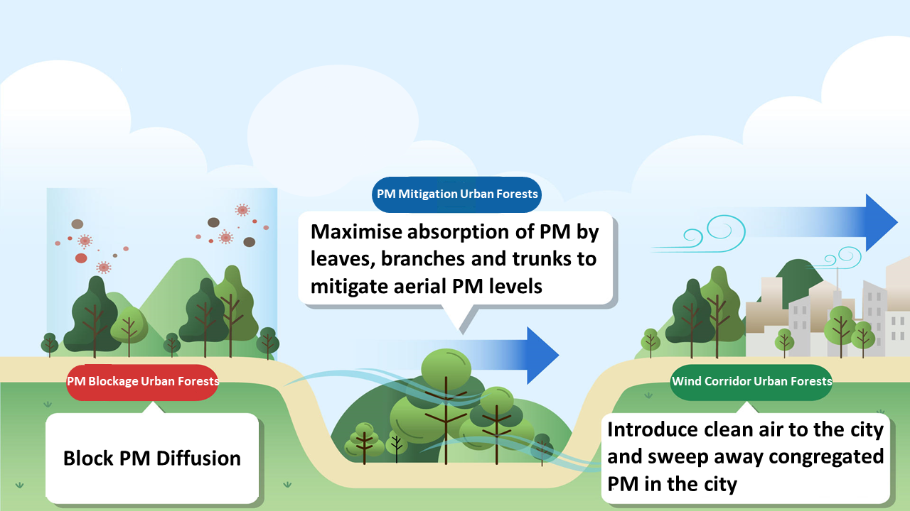

4 Week 4
2030 Seoul Plan - Focus on Particulate Matter (PM) Policy
Summary
In this diary, I am going to talk about the biggest city plan in South Korea and how a low-level city plan guideline is aligned with its upper-level plan. In particular, I will focus on the implementation of the plan regarding environment and whether there is any implementation that can be benefited from using remote sensing.
Brief Information about 2030 Seoul Plan
2030 Seoul Plan is the highest level city plan in Seoul, South Korea. Provided that Seoul is a capital city in South Korea, its city plan is often considered as significant and determinant as a government-led plan, in terms of its impacts on citizens of Seoul and the country. The plan covers a number of sectors which include housing, transport and environment. The city plan presents Seoul’s future vision and outlines the city’s development plan for the next 10 years.
With regards to environment, the plan specifies 3 Targets and 11 Strategies. The 3 targets are as follows:
- Target 1: Ecological city with numerous urban parks
- Target 2: Energy-efficient city
- Target 3: Disaster-free city
Among the illustrated targets, Strategy 1-4 under Target 1 suggests a number of ways to deal with particulate matter, which is one of the biggest environmental issues in South Korea and highly related to citizen’s life. One of the mitigation actions to deal with the air pollutants identified by the Seoul government is creating urban forests on those areas which are specifically vulnerable to fine dust.
2030 Seoul Plan (Source: Seoul Metropolitan Government)
Urban Forest Guideline for PM Mitigation
Urban Forest Guideline for PM Mitigation is a low-level city plan which entails types of activities that will be executed in line with the 2030 Seoul Plan. The guideline specified a number of technical rules to follow regarding types of trees to plant, which areas are targeted for urban forests implementation, and suitable distance between each tree stand and so on.
Furthermore, the guideline categorised six types of urban forests that could mitigate the concentration of PM. These are street trees, urban parks, forests around the city, vegetations in schools and river, and green spaces within proximity to residential areas.

Distance between trees in residential areas (Source: Seoul Metropolitan Government)
3 Functional Urban Forest Types for PM Mitigation
The said urban forest types can be grouped into 3 types of urban forests in terms of their objective and functionality. These are PM blockage urban forests, PM mitigation urban forests and Wind corridor urban forests.
PM blockage urban forests:
- dense urban forests with 1,800 trees per ha
- to block PM diffusion
PM mitigation urban forests:
- between 800 and 1,000 trees per ha
- to enhance PM absorption by urban forests
Wind corridor urban forests:
- 500 trees per ha
- to introduce clean air to city centre
- to enable the outflow of congregated PM within the city due to vehicles and household heating.

3 Types of PM Mitigation Urban Forest Types (Source: Korea Forest Service)
Application
Remote sensing can come into play a key role in identifying what PM mitigation urban forest types are most suitable to a particular site within a city, and quantifying the amounts of PM absorbed by urban forests.
Remote sensing is an effective measure to map and monitor PM concentrations (Zhang et al. 2021). This indicates that areas with routinely high PM concentrations can be detected by satellite images. Thus, government officials could take data-informed decisions and select the most suitable PM mitigation urban forest types for each particular area.

Average PM2.5 concentration between 2001 and 2006 mapped by remote sensing (Source: Zhang et al. (2021))
In addition, Gupta et al. (2006) found that remote sensing can capture the movement of air pollutants over a large area as satellite measurements are available globally. Their findings allude to us that remote sensing could enable us to understand how much PM have been absorbed by urban forests by measuring the size of PM mass between areas. The policymakers could draw on these quantified data as a basis for future policies.
Documentation of 1-year change of PM2.5 mass concentration in five study regions (Source: Gupta et al. (2006))
Link to UN SDG Goals
According to United Nations 2030 Sustainable Development Goals (SDGs), the use of remote sensing could contribute to achieving 2 SDGs goals.
SDG 3. Good Health and Well-Being
- PM causes various health problems, such as lung and heart diseases. The reduction in PM could improve citizen’s health and quality of life.
SDG 11. Sustainable Cities and Communities
- Creating urban forests, as a measure to mitigate PM, could not only reduce aereal PM but also contribute to building a safe and resilient built environment from other natural hazards.
Reflection
This week’s contents were somewhat different from what we have learnt past few months. Understanding policy and how remote sensing could come into play its part in realising the policy’s objective was interesting. The contemplation upon how remote sensing can be applied at a particular context and a site broadened my understanding. Of course, I am aware that remote sensing is one of many solutions that could assist in achieving policy’s goals, and 1-size-fits-all approach is not sufficient to solve similar problems in different contexts. Thanks to this week’s lecture, however, I could say that I came to understand how we can apply our theoretical and technical knowledge about remote sensing to solve the real problems.
References
Korea Forest Service. (n.d.) https://english.forest.go.kr/kfsweb/kfs/subIdx/Index.do?mn=UENG (Accessed: 02.02.2022)
Seoul Metropolitan Government. (n.d.) https://www.seoul.go.kr/main/index.jsp (Accessed: 02.02.2022)
United Nations. (n.d.) https://sdgs.un.org/goals (Accessed: 02.02.2022)